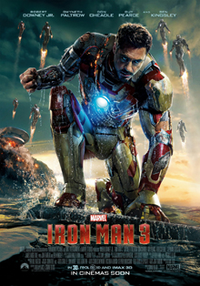

My Favorite movies

|
The Wolf of Wall StreetIn 1987, Jordan Belfort (Leonardo DiCaprio) takes an entry-level job at a Wall Street brokerage firm. By the early 1990s, while still in his 20s, Belfort founds his own firm, Stratton Oak mont. Together with his trusted lieutenant (Jonah Hill) and a merry band of brokers, Belfort makes a huge fortune by defrauding wealthy investors out of millions. However, while Belfort and his cronies partake in a hedonistic brew of sex, drugs and thrills, the SEC and the FBI close in on his empire of excess. |
Iron Man 3Plagued with worry and insomnia since saving New York from destruction, Tony Stark (Robert Downey Jr.), now, is more dependent on the suits that give him his Iron Man persona -- so much so that every aspect of his life is affected, including his relationship with Pepper (Gwyneth Paltrow). After a malevolent enemy known as the Mandarin (Ben Kingsley) reduces his personal world to rubble, Tony must rely solely on instinct and ingenuity to avenge his losses and protect the people he loves. |
 |
 |
Forrest GumpSlow-witted Forrest Gump (Tom Hanks) has never thought of himself as disadvantaged, and thanks to his supportive mother (Sally Field), he leads anything but a restricted life. Whether dominating on the gridiron as a college football star, fighting in Vietnam or captaining a shrimp boat, Forrest inspires people with his childlike optimism. But one person Forrest cares about most may be the most difficult to save -- his childhood love, the sweet but troubled Jenny (Robin Wright). |
About this page
This page has been coded during the FullStack program @LeWagon. That was probably the best experience of my entire life.